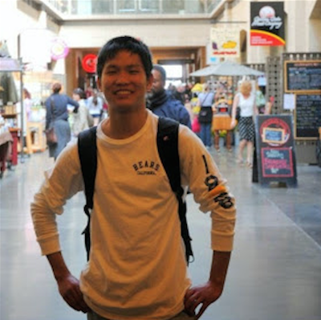

Austin Jiang moved to Atlanta from Ames, IA. Before move to Georgia Tech (2014), He studied mechanical engineering at the Iowa State University (2012) and also took summer school in UC, Berkeley (Summer 2012) and study abroad in Hong Kong University of Science and Technology (Spring 2014). After got his bachelor degree in Georgia Tech (Fall 2016), unsatisfied with the exclusive knowledge only in mechanical engineering. He decided to take second bachelor degree in computer science, in order to explore the computer vision and controlling of robotics. Proceeded to work in a fast, upscale academic environment, assuring understanding the new course knowledge in a thorough way. Passionate about the robotics, the move to robotic filed will be a natural fit for me in the future. With encouragement from friends and Professors, Austin planned apply for PhD in robotics in 2018. In his free time, Austin loves to go hiking with his labmates. He also loves biking and promoting ride bike culture. Austin also volunteers every Friday afternnon in GT Starter Bikes club to help student to fix their bikes.
resumeBio
Be honor of a student, Be honor of a researcher, Be honor of a future scientist.
